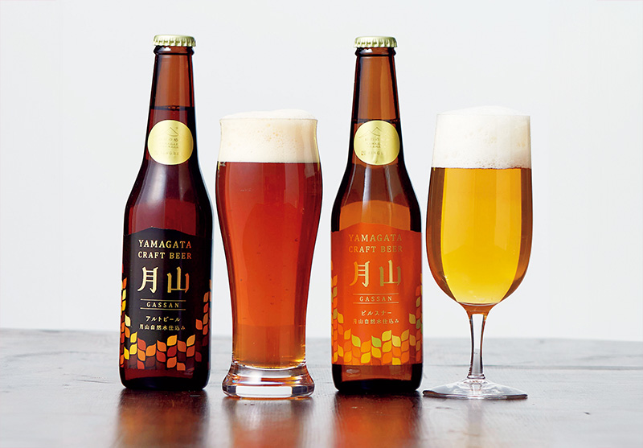
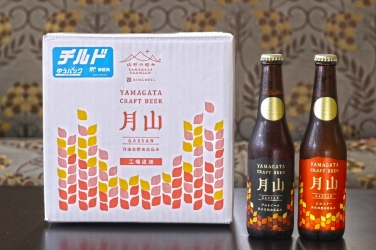
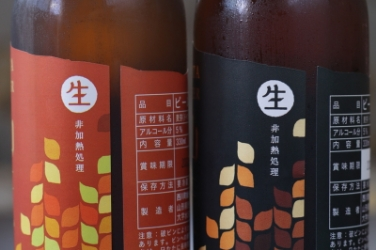
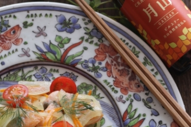
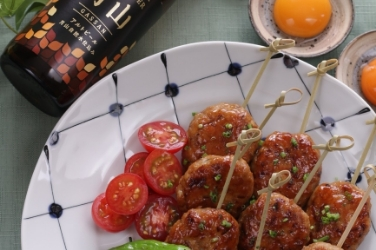
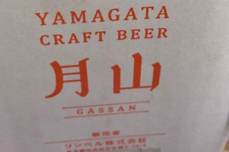
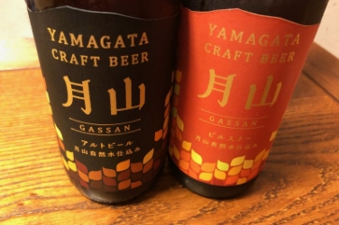
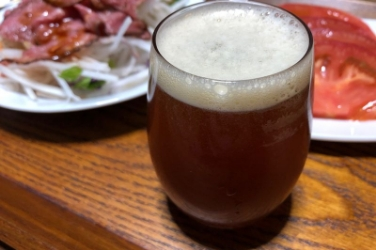
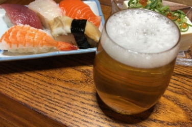

麦芽100%プレミアムビール
月山クラフトビール
名峰・月山の清涼な湧水のみを使用
無濾過の酵母が生きるクラフトビール
ここが「極み」
- 名水で名高い月山山麓で造られている麦芽100％使用
- ドイツのカスパー・シュルツ社の醸造機器を使って醸造
- 酵母が生きる非熱・無濾過処理
山形の名峰・月山の湧水で造られた
麦芽100％のプレミアムビール。
日本有数の豪雪地帯、山形県月山山麓で造られている麦芽100％のプレミアムビール「月山クラフトビール」。
ドイツやチェコ産の麦芽とホップ、そして名水百選にも選ばれた名峰・月山の湧水のみを使い、ドイツのカスパー・シュルツ社の醸造機器を使って醸造。非熱処理で作られた無濾過の酵母が生きる深い味わいが特徴です。
ふくよかな味が楽しめる赤褐色の「アルト」、爽快な喉ごしで黄金に輝く「ピルスナー」の2種類をご用意。
どちらも麦芽由来の穀物の甘みや旨みが感じられるプレミアムな味わいです。きめ細やかな泡とスムーズな口当たり、爽快な喉越しをお楽しみください。

レビュー
開封から味わいまで、
美食の専門家が徹底レビュー！
どちらも「酵母が生きた」個性的な味わい。大切な方への贈り物や、家飲みにもオススメ
料理家道下欣子 さん
-
チルド便で届きます！温度管理にもこだわっているところが好印象。

-
ラベルの脇には「生」非加熱処理の表示。こちらは酵母が生きたまま入っています。

-
ピルスナーのすっきり感が、ほんのりカレー風味のマリネ液とよく合います。

-
ししとうの苦みはアルトビールとは異なる苦みですが、それが良いアクセントになるペアリングだと思います。

のど越しがよく、いくらでも飲めそうです。幅広い年代の方に楽しんでいただける味です。

フードライター藤岡智子 さん
-
冷蔵便で届きました。箱を見ると工場直送とのこと。

-
ラベルも素敵で、絵になりますね。「生」と書かれた文字にも心が躍ります。

-
赤褐色の「アルト」は、ふくよかな香りと芳醇な味わい。ほどよい苦みとコクに魅了されます。

-
金色に輝く「ピルスナー」。爽快でキレがあります。のど越しがよく、いくらでも飲めそうです。
